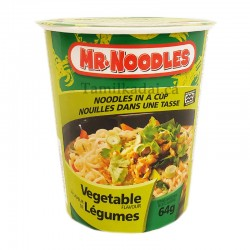

<!DOCTYPE html>
<html lang="en">
</html>
<head>
    <meta charset="utf-8">

    <main>
        <h1 id='header'>Mr. Noodles Cup Soup</h1>
        
        <div>
            <h4>Ingredients</h4>
            <ul>
                <li>Instant Noodles:

                    2 packs of your favorite instant noodles</li>
                <li>Broth Base:

                    4 cups of vegetable or chicken broth (you can use bouillon cubes or pre-made broth)
                    1 tablespoon of soy sauce
                    1 teaspoon of sesame oil (optional, for extra flavor)</li>
                <li>Vegetable Medley:

                    1 cup of sliced carrots
                    1 cup of broccoli florets
                    1/2 cup of sliced mushrooms
                    1/2 cup of sliced bell peppers (any color)</li>
                <li>Protein Kick:

                    1 cup of shredded cooked chicken, tofu, or a boiled egg (optional)</li>
                <li>Garnish:

                    Chopped green onions
                    Sesame seeds
                    A dash of hot sauce (optional)</li>
            </ul>
        </div>
        <a href="#header">Return to top</a>
        <p></p>
        <a href="../index.html">Return to main page</a>
    </main>